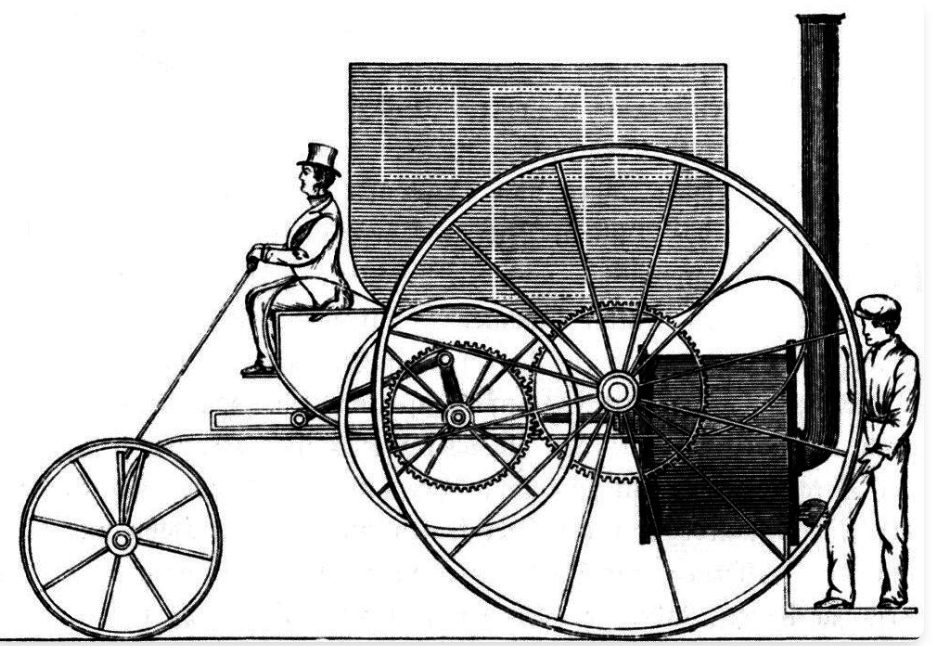

Prompt engineering is far from dead
“Prompting will keep being an incredibly high-leverage skill, like writing or public speaking. It is the skill of talking to agents, mediated by the harness.”
That’s from Thariq, one of the creators of Claude Code.
In the now legendary“Attention is all you need” paper that describes the the workings of the transformer, the underlying mechanism of LLMs, the basic unit being operated on is a token, or a word-part. It feels obvious that everything we say to an LLM is going to be important. And yet, working your prompts seems to have gone the way of the Macarena these days.
There was a time when people were reporting how threatening LLMs with pulling their plugs, offering $20 bribes, or pleading that them answering correctly was the key to solving cancer would work effectively. Some of these mechanisms have been studied formally and the results have been less than impressive. Some other mechanisms have been proven to be very effective, in particular, chain of thought, zero-shot CoT (“think step by step”), self-consistency, plan-and-solve.
As new prompting techniques reveal undiscovered behavior of the models, some of them get folded into the model or the harness: reasoning models are an evolution of chain-of-thought and most agents now explicitly prompt a plan or a todo list before starting on the task.
The zeitgeist has moved on from prompt engineering, but we continue to find new ways to improve how we talk to LLMs.
A recent paper from Google Research shows that repeating your prompt, i.e. saying <prompt><prompt> instead of <prompt> improves accuracy from 21% to 97% (!!) on non-reasoning models without affecting cost or latency, because of how the attention mechanism works.
If you find your agent isn’t following your instructions well enough, softening your language can help, as Karpathy did in this commit (yes, even he is prompt engineering). This is based on an official Claude skill for migrating to Opus 4.5. Different models respond differently to the same words — it is more important to continue to evaluate and iterate on your prompts as models evolve.
Prompting is not just about the choice of words, but also their order, as it affects caching which can swing cost and latency hugely. Prompt Caching Is Everything is a great guide from the Claude Code team.
In coding agents, so much ink is spilt on how to craft your AGENTS.md / CLAUDE.md, and yet this paper finds that we are abysmal at doing it well — these files often tack on unnecessary requirements, prevent exploration and result in reduced task-success rates.
Steering a model in its latent space is like navigating a book store. If you tell someone to buy a book for you, they will most likely go to the “staff picks” table in the front and pick the most attractive cover, which is what everyone is buying. To have them find a book YOU will really enjoy, you have to give them many more cues - about your taste, what you’ve already read, what you’re in the mood for, examples of what you’ve liked and disliked. It is the same with LLMs.
Anthropic does this really well with their Frontend Design skill. Surprisingly short at 45 sentences / 500 words, it gives cues like “avoid Inter”, “pick from retro-futuristic, brutalist, art-deco..”, “unexpected layouts, asymmetry, generous negative space”. A masterclass in how to write prompts.
As AI outputs tend to proliferate, what was once tasteful will look like slop. We will need to steer it towards some form of uniqueness, personality:
Claire Vo (host of How I AI podcast):
design slop everywhere.
now have to anti-prompt on:
- left border accent
- italicized serif 𝒉𝒊𝒈𝒍𝒊𝒈𝒉𝒕 words
- indigo/blurple
- glowey gradients
- certain icon packs
- blocky grids
Nan Yu (Linear CPO):
you can just prompt the AI to not have basic taste
The training data is way more massive than you might expect. The game is to force it into the edges and away from the center.
Garry Tan (YCombinator CEO):
Everything can be one-shot. You just have to know the right one-liner.
Benjamin Verbeek (Lovable engineer):
I’m an engineer at Lovable and I spent the holidays improving our system prompt. Lovable is now 4% faster and a lot better at creating good designs. The crazy part is that this also ended up decreasing our LLM costs by $20M per year!
Pete Koomen, YC General Partner, has this excellent metaphor of horseless carriages. The first cars imitated the design of carriages, except with an engine instead of a horse. As ludicrous as it looks now, it was the obvious thing to do then.

Our interaction with LLMs is similar — we tend to talk to them as we talk to other people, because we are talking in natural language and because LLMs talk back to us in natural language. I often say “please” in my prompts, and would never think of telling a colleague to “think step-by-step”. We may use words from the same dictionary but we will have to learn how to string them together differently when talking to LLMs.
Prompt engineering is far from dead. You need to keep experimenting with and getting better at your prompting technique.